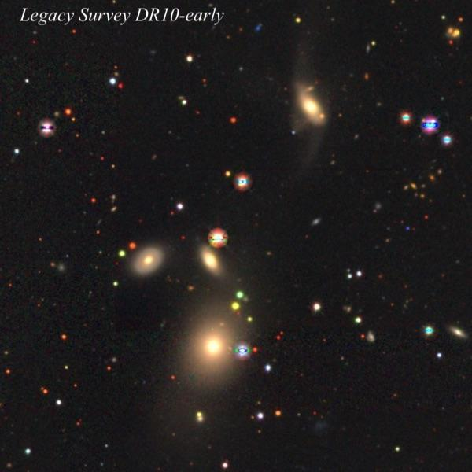

Abell 7 + neighbors
- Name: Abell 7, PK 215-30.1, PN G215.5-30.8, [Abell55] 6
- Type: Planetary Nebula
- Constellation: Lepus
- RA: 05h 03m 07.5s
- Dec: -15° 36’ 13"
- Size: 790" x 776"
- Central star: 15.5
Our last OOTW for 2022 is the huge, ancient planetary Abell 7 (and its neighbors), which lies in Lepus. With dimensions 14'x13', a 1996 study by Tweedy and Kwitter ("An Atlas of Ancient Planetary Nebulae and their interaction with the Interstellar Medium") had this to say about Abell 7:
"Of those planetary nebulae that do not interact with the interstellar medium (ISM), this is the largest. There are a number of asymmetric enhancements that reveal a sharp drop in ionization, none of which appear on the perimeter of the nebula. Although these could be interaction features that happen to lie on the face of the nebula, an H-alpha image obtained at the KPNO 4 m by G. H. Jacoby (1995, personal communication) has convinced us that these are embedded within the nebula and are not due to the ISM."
The "asymmetric enhancements" show up well in this image by Peter Goodhew using H-alpha and O III filters.

Distance measures vary widely (common to PNe), depending on the measure used, but a 2021 paper using Gaia’s Early Data Release 3 (EDR3) reports ~832 light years.
The first visual observation I'm aware of was made by Dana Patchick in 1985 using a 17.5-inch. I looked for it about 3 months after Dana with my 17.5-inch at 83x with an O III filter from the Sierra foothills. Unfortunately, conditions were poor in terms of transparency and seeing. Nevertheless, I logged it as...
Very faint, extremely large, surrounding a group of six stars, requires averted vision. Appears as a hazy region of very low surface brightness and the edges were ill-defined"
I took another look in 2004 with my 18-inch at 73x, again with an OIII filter and also with poor seeing and fair transparency (such as conditions often are in the winter).
Extremely large, ghostly glow, perhaps 6' in diameter. Although the surface brightness is very low, it was visible as an irregularly-shaped, hazy patch, with 5 or 6 stars involved on the south side. The edge of the planetary was better defined on the southern periphery and it appeared to fade out on the north side, so I may not have seen the full extent. Once identified, though, it wasn't difficult with averted vision.

Extra 1: The small edge-on in the images is MCG -03-13-058 = PGC 16611 and it's situated ~10' NW of center. It appeared in my 18-inch as an extremely faint, low surface brightness, extended patch.
Extra 2: If you shift 12' further northwest, you'll run into HCG 32A = MCG -03-13-53, which is the brightest member of the Hickson Compact Group 32. This quartet lies at a distance of 560-580 million l.y. In my 24-inch, galaxies 32A and 32B were easy, with a mag 13.5 attached on the west side of 32A. HCG 32C was visible but quite faint, and I missed 32D. Legacy Survey shows HCG 32C is quite distorted with long tidal tails and a possible bridge to 32A.
Extra 3: About 1.2° northwest of Abell 7 is R Leporis, perhaps better known as Hind's Crimson Star, though truth be told it was first discovered by William Herschel in 1785 and called a "bright garnet star" (he identified all deep red stars as "garnets"). In any case, R Lep is a beauty, so make sure to check it out if you haven't observed it before.


Happy Holidays!
"Give it a go and let us know!
Good luck and great viewing!"